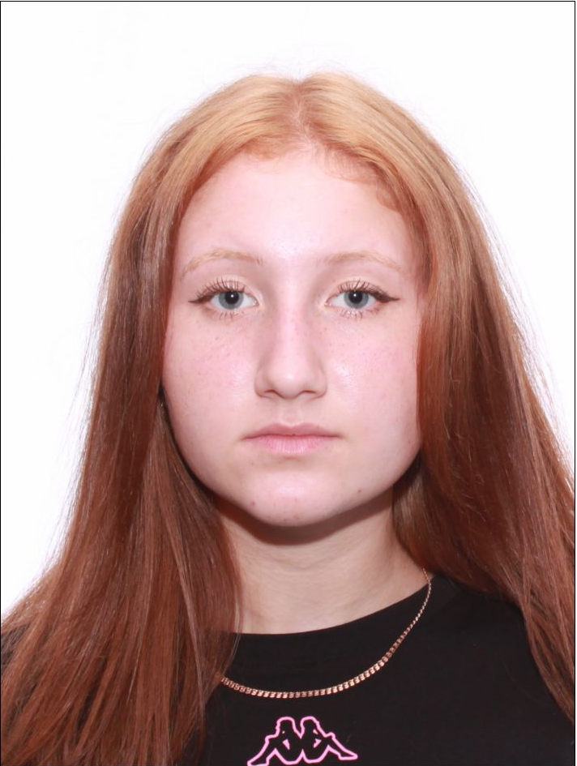

О нас
В небольшом, но живописном поселке Чернава, расположенном на плодородных полях и в окружении зелёных лесов, была основана сельскохозяйственная компания - ООО "Чернава". Идея создания компании принадлежала двум братьям, Андрею и Ивану, которые с самого детства мечтали заниматься земледелием и развивать родное село.
С тех пор прошло несколько лет, и ООО "Чернава" распахнула свои двери для местного рынка. Продукция компании стала пользоваться высоким спросом не только в родном поселке, но и за его пределами. Братья начали участвовать в различных выставках и ярмарках, где презентовали свои экологически чистые продукты. За время своего существования они смогли завести новые знакомства с рестораторами и магазинами, которые стремились предложить своим клиентам качественные и натуральные продукты.
С течением времени ООО "Чернава" стало символом устойчивого развития региона, а братья - примером для подражания. Их мечта о чистой и натуральной пище воплотилась в жизнь, и с каждым годом они вдохновляли всё больше и больше людей следовать их примеру, создавая ту самую атмосферу, где сельское хозяйство может процветать.
Так, благодаря целеустремленности и любви к своей земле, ООО "Чернава" превратилось из маленькой компании в успешный бизнес, который стал гордостью не только поселка, но и всей области, демонстрируя, что настоящая страсть и забота о природе могут изменить мир к лучшему.
Виды деятельности
-
Животноводство

Численность стада ООО "Чернава" 3664 голов. Во владении компании находится современный молочный комплекс. -
Растениеводство
-
Производство молока
Дойное стадо составляет 1 633 голов. В сутки надои доходят до 50 тонн. Надой на одну корову в 2024 году составил 1 442 кг.
Контакты
-

Директор компании - Лобастова Татьяна Андреевна 89005978473 Остались вопросы? Заполните форму. Мы с вами свяжемся! Задать вопрос